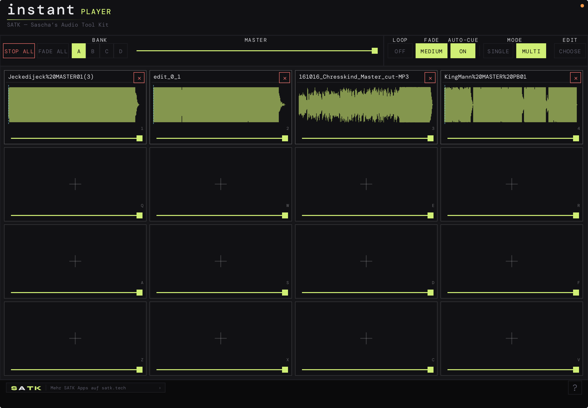

Sampler und Instant-Replay-Player für iPhone und iPad. 64 Cue-Slots in 4 Bänken, Tastatur-Trigger, Loop, Fade, Auto-Cue, Wellenform-Vorschau. Live-tauglich, latenzarm, ohne Cloud-Pflicht. Spielt mit Easy Editor zusammen.

Instant Player ist der fokussierte Cue-Player für Live, Broadcast und Studio. 16 Pads pro Bank, 4 Bänke, alle Slots mit eigenen Loop-, Fade- und Trigger-Einstellungen. Voice-Coil-genaue Wiedergabe ab dem ersten Sample, ohne erst auf Lade-Spinner zu warten.
64 unabhängige Cue-Slots, organisiert in 4 Bänken mit je 16 Pads. Bankwechsel per Swipe oder Hardware-Shortcut. Pro Slot eigener Name, Farbe, Loop-Flag, Fade-In/Out, Trigger-Mode, Volume.
Alle 64 Slots werden beim Bank-Wechsel in den Speicher gelesen. Trigger-zu-Ton-Latenz unter 10 ms auf modernen iPads. Kein Streaming, kein Buffer-Underrun, kein Stottern bei vielen gleichzeitigen Triggern.
Touch-Pads, externe Bluetooth-/USB-Tastatur (1–9, Q–U, A–J, Z–M), MIDI-Note-On, MIDI-Program-Change für Bank-Wechsel. CoreMIDI über Lightning/USB-C oder Netzwerk. Konfigurierbar pro Pad.
Play (Fire-and-Forget), Hold (gehalten = spielt), Toggle (Tap = Start/Stop), Loop (endlos bis Stop), Auto-Cue (springt nach Stille zurück auf Cue-Punkt). Choke-Gruppen für Stinger-Sets.
Großes Display über dem aktiven Pad mit Wellenform, Position, Restzeit. Cue-Punkt und Out-Punkt per Drag setzen. Fade-Kurven sichtbar. Tap-to-Cue auf der Wellenform für Spot-Replay.
Audio aus der Files-App, iCloud Drive oder per AirDrop direkt auf ein Pad ziehen. Aus Easy Editor exportierte Schnitte landen mit einem Tap als neues Pad. WAV, AIFF, FLAC, MP3, M4A.
Bänke sind komplette Sets — typischerweise pro Show, Sendung oder Theaterstück eine. Per Swipe oder MIDI-Program-Change in unter 100 ms umschaltbar.
Audio rein, Pad belegen, Trigger-Modus wählen, los. Auf iPhone (4×4 Grid) und iPad (4×4 mit großer Wellenform) gleich bedienbar.
Audio aus Files, iCloud Drive oder AirDrop auf ein Pad ziehen. Direkt-Import aus Easy Editor. WAV, AIFF, FLAC, MP3, M4A. Bis 2 GB pro Bank.
Auf der Wellenform Cue-Punkt (Startpunkt) und Out-Punkt setzen. Fade-In/Out in ms eingeben. Volume und Trim per Slider, Pan optional.
Play, Hold, Toggle, Loop, Auto-Cue. Choke-Gruppe optional (gleichzeitiges Triggern stoppt andere Pads in derselben Gruppe — perfekt für Stinger).
Pad antippen, Tastaturkürzel drücken, MIDI-Note senden. Mehrere Pads gleichzeitig, polyphon. Master-Stop und Master-Fade in der Toolbar für Notabbrüche.
Native iOS-App mit AVAudioEngine. Latenzarm, polyphon, ohne Cloud-Pflicht.
Soundboards in der Praxis scheitern meistens an einem Detail: das Pad zündet nicht sofort, weil die Datei erst gestreamt wird. Instant Player lädt eine komplette Bank ins RAM, hält 64 Slots vorgebufft und triggert ab dem ersten Sample. Latenz unter 10 ms auf neueren iPads — schnell genug für Live-Beschallung, Studiomoderation und Theater-Cues.